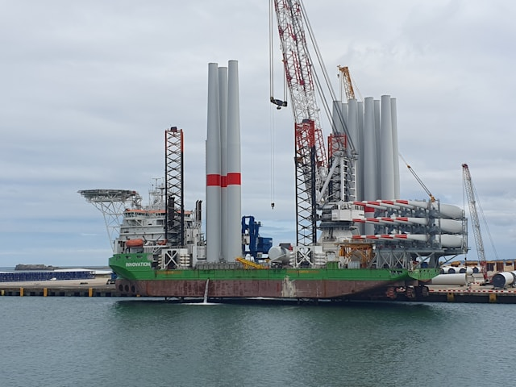
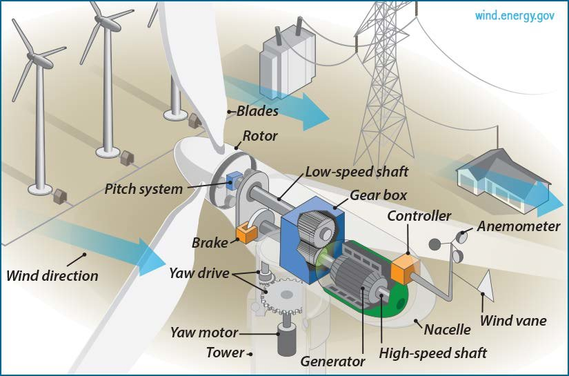

flowchart TD
subgraph Stage1["Stage 1: REE Mining 🪨"]
mining["Extracting Rare Earth Element ores from the ground<br><br>Key Miners: 🇨🇳 🇺🇸 🇦🇺 🇲🇲<br><br>China's Share: ~60-70%"]
style mining fill:#e6f2ff,stroke:#0066cc,color:#003366
end
style Stage1 fill:#b3d9ff,stroke:#0066cc,color:#003366
subgraph Stage2["Stage 2: Complex Processing & Separation ⚗️"]
refining["Chemically separating raw ores into usable oxides and metals<br><br><b style='color:red'>China's Global Share: >85%</b><br><span style='font-size:12px'>Rest of World: <15%</span>"]
style refining fill:#ffe6e6,stroke:#cc0000,color:#660000
end
style Stage2 fill:#ffcccc,stroke:#cc0000,color:#660000
subgraph Stage3["Stage 3: NdFeB Magnet Manufacturing 🧲"]
magnet_making["Producing high-performance Neodymium-Iron-Boron permanent magnets<br><br><b style='color:red'>China's Global Share: ~90-92%</b><br><span style='font-size:12px'>Rest of World: <10%</span>"]
style magnet_making fill:#ffebcc,stroke:#cc7000,color:#664400
end
style Stage3 fill:#ffd699,stroke:#cc7000,color:#664400
subgraph Stage4["Stage 4: Used in Wind Turbines 🌬️"]
turbine_use["Essential for Permanent Magnet Synchronous Generators (PMSGs) in modern turbines"]
style turbine_use fill:#e6ffe6,stroke:#009900,color:#004d00
end
style Stage4 fill:#ccffcc,stroke:#009900,color:#004d00
Stage1 --> Stage2
Stage2 --> Stage3
Stage3 --> Stage4
How Rare-Earth Element Dependency Threatens the Global Wind Rollout
A couple of weeks back, I read an article in the FT about Ørsted, the big Danish offshore wind developer. Its stock was getting hammered. Part of the story involved project hiccups off the coast of the United States, but another significant factor was the escalating trade tension, particularly involving US tariffs under the Trump administration. I initially dismissed the tariffs as “political noise,” figuring the underlying green transition trend was solid enough to weather it. This looked like a potential buy-the-dip opportunity. So my colleague Jonas and I each bought one share each, just to keep an eye on it.
It wasn’t our finest investment idea. After some short-lived gains, the stock slumped further. It is down 22 percent year to date.
Our mistake wasn’t just misjudging the company’s immediate prospects. It was more fundamental. I’d failed to appreciate how deeply intertwined the green energy revolution is with complex global supply chains and how vulnerable those chains are to geopolitical actions. What I’d dismissed as “political noise” wasn’t just noise – it was rapidly escalating into direct actions targeting the very materials essential for green technology. Building wind turbines isn’t just about steel and fiberglass; it’s about a sprawling supply chain with precarious dependencies, especially on rare earth metals. My Ørsted bet foundered partly because I didn’t grasp the machine itself, where its most critical parts really come from, and how directly exposed they are to the current trade conflict.
The Giants We See vs. The Materials We Don’t
When you think of a wind farm, you picture the obvious things: the enormous towers reaching for the sky, the massive blades sweeping through the air. These are engineering marvels, and their sheer size dictates a lot about how they’re made and sourced.

Photo by Rob Webbon on Unsplash
Towers are typically huge steel tubes, sometimes concrete, assembled on site1,2. Blades are complex composite structures, often using fiberglass or carbon fiber, resins, and lightweight core materials like balsa wood or synthetic foams3–5. Because these components are so gigantic and unwieldy, shipping them long distances is incredibly expensive and logistically grisly6,7,7. Consequently, manufacturing for towers and blades tends to be regionalized. You see factories popping up relatively close to the major wind markets in the US, Europe, China, India, and Brazil8–11.

The raw materials themselves seem somewhat diversified, at first glance. Steel is a global commodity, though regional suppliers are often preferred for towers12,13. Fiberglass and resins come from the global chemical industry14. While China is a major consumer of balsa wood for blades, the primary source for balsa is Ecuador15, and alternatives like PET foam are increasingly used5,16.
So, looking just at these colossal, visible parts, the supply chain seems somewhat distributed. Logistics, not geopolitics, appears to be the main driver. The direct dependency on any single country, including China, looks manageable for these specific components. But this surface-level view is deceptive. The real story, and the real, active vulnerability being exposed by current events, lies hidden inside the box atop the tower.
The Magnetic Heart & China’s Dominance
So, the big blades and towers look relatively straightforward from a geopolitical sourcing perspective. But the real action, and the real vulnerability, is inside the nacelle – the house-sized box sitting atop the tower that contains the turbine’s power-generating guts17,18.
A key component here, especially for many efficient modern designs like direct-drive turbines (which ditch the heavy gearbox), is the Permanent Magnet Synchronous Generator (PMSG)19. These generators rely on incredibly powerful permanent magnets, specifically Neodymium-Iron-Boron (NdFeB) magnets, to convert rotational energy into electricity20.
These aren’t your average fridge magnets. They require specific Rare Earth Elements (REEs) – primarily Neodymium (Nd) and Praseodymium (Pr), often boosted with smaller amounts of Dysprosium (Dy) and Terbium (Tb) for high-temperature performance20.
And here’s the crux: while REEs are mined in various places (including the US and Australia), the complex, dirty, and technologically challenging task of separating and processing these elements into usable oxides and metals is overwhelmingly dominated by one country: China. China controls over 85% of global REE processing capacity20. Crucially, this dominance is even starker for the heavy REEs like Dysprosium and Terbium – essential for high-performance magnets – where China accounted for effectively 100% of global processing until very recently.
But it doesn’t stop there. China also dominates the next crucial step – manufacturing the finished high-performance NdFeB magnets themselves, accounting for around 90-92% of global production20. This dual chokehold isn’t just a passive risk; it’s now being actively leveraged.
In direct response to recent US tariff hikes under President Trump’s second term, China imposed new export restrictions in April 2025. These specifically target seven medium and heavy REEs (including the critical magnet inputs Dysprosium and Terbium) and the magnets themselves, requiring special export licenses. This isn’t a hypothetical threat; it’s the weaponization of a known dependency, directly impacting inputs vital not only for defense technologies but fundamentally for the magnets powering the green transition’s wind turbines and electric vehicles.
It’s crucial to understand, however, that while US actions triggered this response, the consequences ripple far beyond the United States. The export licensing requirement itself applies globally, affecting buyers in Europe, Japan, South Korea, and other nations dependent on these materials. Reports even indicate China is directly warning companies in allied nations like South Korea against supplying products containing these REEs to US defense firms. So, while framed within the US-China conflict, these controls create uncertainty and potential disruption for the entire global high-tech manufacturing base reliant on Chinese-processed rare earths, further complicating energy transition plans worldwide.
Why is this dependency so hard to break? Building new REE processing plants and magnet factories outside China requires enormous long-term investment, navigating environmental hurdles, and developing specialized technical expertise20. Efforts are underway, including reviving processing in the US and developing recycling technologies, but scaling these alternatives to meet the massive demand from the energy transition is a slow, expensive, and uncertain process20,21. Adding another layer of risk, China has already implemented export restrictions on REE extraction and separation technologies in December 2023, and signals suggest it could potentially restrict magnet exports too, giving it significant geopolitical leverage22,23.
Efforts are underway – the US Department of Defense, recognizing the strategic risk (evidenced by the massive amounts of REEs in military hardware), is funding projects like MP Materials and Lynas USA to build domestic processing and magnet capacity. However, the scale highlights the challenge: even planned US NdFeB magnet production by late 2025 (e.g., MP Materials aiming for 1,000 tons) is dwarfed by China’s estimated 300,000 tons produced in 2024. The US is years away from self-sufficiency, even for its defense needs, let alone the vast quantities required for the energy transition. International partners like Australia are also developing resources, but currently lack refining capacity independent of China.
This REE bottleneck, now actively being constricted through export controls triggered by trade disputes, is the single most critical and immediate geopolitical vulnerability in the wind turbine supply chain. While other components face challenges, none combine near-total reliance on a single nation actively using that reliance as leverage, with such immense difficulty in building alternatives at the necessary scale and speed.
Here’s a quick breakdown of the dependency levels for key components:
| Component | Key Materials/Processes Involved | China’s Role & Dependency Level | Difficulty Sourcing Alternatives at Scale |
|---|---|---|---|
| Blades | Fiberglass, Carbon Fiber, Resins, Core (Balsa, PET/PVC Foam)24 | Moderate: Major manufacturing hub (incl. for Western OEM exports25); Major consumer of raw materials (e.g., balsa26). | Low-Moderate: Balsa sourced from Ecuador27; PET foam alternative global26; Fibers/resins global24; Regional mfg capacity exists. |
| Towers | Steel (predominantly), Concrete28 | Low: Major steel producer & tower manufacturer for domestic market.29 | Low: Steel is global commodity; Tower mfg highly regionalized29; Capacity exists in key markets29. |
| Nacelle Assembly | Integration of internal components30 | Moderate: Major global assembly hub, including for Western OEM exports.25 | Low (for assembly): Assembly capacity exists globally31. High dependency relates to specific internal components (see below). |
| Gearbox | Steel alloys, Gears, Bearings32 | Moderate-High: Major manufacturing location; Key domestic suppliers (e.g., NGC).33 | Moderate: Concentrated market, but key suppliers also exist in Europe (ZF/Winergy, Moventas etc.).33 |
| Generator (PMSG) | Copper, Steel, REE Magnets (Nd, Pr, Dy, Tb)28 | Very High (for Magnets): Dominates REE processing (>85%) and magnet manufacturing (~90-92%)34; Subject to active export controls imposed April 2025.35. | Very High (for Magnets): Alternatives (non-China processing, recycling) limited/developing slowly.36 |
| Generator (Other) | Copper, Steel, Insulation28 | Low-Moderate: Major manufacturing location, but global suppliers and capacity exist.37 | Low: Global commodity materials; Established global suppliers (ABB, Siemens Energy etc.).37 |
| Bearings | Steel alloys | Moderate-High (Assumed): Major industrial component hub; Potential US bottleneck.38 | Moderate: Specialized; Global mfrs exist but scaling alternatives for large turbines might be challenging.38 |
| Power Electronics | Semiconductors, Copper, Aluminum, Plastics28 | High (for Components): Major hub for electronics manufacturing; Reliance on Asian semiconductor supply chain. | Moderate-High (for Components): Diversifying semiconductor/electronics supply chains is complex and long-term.37 |
Table: China Dependency Analysis for Wind Turbine Components
Beyond Magnets: Other Pressure Points
Okay, so the reliance on China for rare earth magnets is the elephant in the room – and recent export controls confirm it’s an elephant that can be prodded for geopolitical leverage. It’s the most stark example of a critical dependency. But it’s not the only potential pressure point hidden within the wind turbine’s supply chain, even if others are less severe.
Think about gearboxes, essential for many turbine designs that aren’t direct-drive25. These are complex, high-precision machines. While major European suppliers like ZF/Winergy, Moventas, and Renk exist, China is also a key manufacturing hub and home to major players like China High Speed Transmission (NGC)33,39. The market for these specialized components is relatively concentrated globally, meaning diversifying away from existing players, including Chinese ones, isn’t necessarily easy32.
Then there are the large, specialized bearings needed for the main shaft rotation, blade pitch adjustment, and nacelle yaw movement25,40. Specific sourcing data can be scarce, but these have been flagged as potential bottlenecks, particularly as turbines get bigger and for the growing US offshore market23,38. While global bearing manufacturers exist, scaling up alternative production quickly for these massive, custom-designed parts could be challenging38.
Finally, consider the power electronics and control systems – the turbine’s brain and nervous system28. These rely heavily on the global semiconductor and electronics supply chain, which, as we know, is heavily concentrated in Asia, including China28,41. Even if the final control units are assembled or integrated regionally, the essential chips and other electronic components often start their journey in East Asia. Rapidly shifting this underlying dependency is a complex, long-term proposition.
So, while the rare earth magnet situation represents an extreme case – a near-monopoly on a critical material with few easy substitutes – these other dependencies on gearboxes, bearings, and electronics add further layers of complexity and moderate risk to the wind turbine supply chain. They underscore that even beyond the REE bottleneck, building resilience requires looking deep into the sourcing of multiple specialized components. Still, the magnet issue remains in a class of its own due to that unique combination of extreme market concentration and the sheer difficulty of developing alternatives at scale.
Conclusion: Recalibrating the Green Dream
So, back to my ill-fated Ørsted investment. My initial thinking was simplistic: tariffs are noise, the green trend is real, buy the dip. What I missed was the plumbing behind the green trend, but how exposed that plumbing is to geopolitical friction. The “noise” of tariffs directly provoked retaliatory Chinese export controls on the very rare earths and magnets essential for wind turbines. The fragility isn’t theoretical; it’s being actively demonstrated.
The wind industry starkly illustrates this. The critical vulnerability lies in the permanent magnets, powered by REEs processed almost exclusively in China, particularly the heavy REEs now subject to export licensing. This isn’t just a supply chain concentration; it’s a geopolitical chokepoint being actively tightened. Diversifying away, as the US is attempting with DoD backing, is a monumental, multi-year task facing vast scale and technological hurdles, dwarfed by China’s current capacity.
The fact that these materials are dual-use – critical for both green energy (wind turbines, EVs) and advanced defense systems – raises the stakes immensely. The competition and potential restrictions impact national security and climate goals simultaneously.
Building independent European or Western capacity is proving incredibly difficult, as the recent Northvolt bankruptcy highlights42. If major industrial projects struggle even for batteries, the challenge of creating an independent mine-to-magnet supply chain for REEs outside of China – overcoming technical gaps and massive scale differences – seems even more daunting. Failure risks ceding control over the pace and cost of the energy transition, leaving climate ambitions hostage to the supply of essential components from a single, dominant source that has shown willingness to restrict access.
Achieving our climate goals requires more than targets and subsidies. It demands a hard-nosed focus on industrial strategy and supply chain security, recognizing that the materials underpinning the transition are now squarely in the geopolitical crosshairs. We need serious, sustained investment in diversifying REE processing and magnet production, fostering alternatives43, and acknowledging that building resilience against these active pressures will be slow, expensive, and absolutely critical. Ignoring the reality of where essential parts come from, and the geopolitical levers attached to them, is a gamble the green transition cannot afford.
Post script
The information that I draw on in this article comes from Gemini 2.5’s deep reasearch function. I asked for information on concetrantion in the wind turbine industry, as well as a deep dive on manufacturing in the industry. The results were impressive, and I have included the two PDFs below.
Here is the deep dive on manufacturing in the wind turbine industry.
quadrantChart
title Wind Turbine Component: China Dependency vs. Sourcing Difficulty
x-axis Low China Dependency --> High China Dependency
y-axis Many Sourcing Alternatives --> Few Sourcing Alternatives
quadrant-1 Strategic Vulnerability
quadrant-2 Specialized Tech
quadrant-3 Resilient
quadrant-4 Concentrated Mfg
Blades: [0.6, 0.4]
Towers: [0.2, 0.2]
Nacelle Assembly: [0.61, 0.2]
Gearbox: [0.7, 0.6]
PMSG: [0.95, 0.95]
Generator: [0.4, 0.2]
Bearings: [0.72, 0.65]
Power Electronics: [0.85, 0.75]
References
1.
2.
Goldwind. Sustainability report 2024. (2024).
3.
Dassault Systèmes. Envision energy. (2025).
4.
ESS News. Envision energy breaks ground on factory in kazakhstan. (2025).
5.
NREL. Offshore Wind Market Report: 2024 Edition. https://www.nrel.gov/docs/fy24osti/90525.pdf (2024).
6.
EIN Presswire. Steel wind tower market poised to hit USD 14.5 billion by 2032 with 3.74. (2025).
7.
US Department of Energy. Wind Energy - Supply Chain Deep Dive Assessment Response to Executive Order 14017, "America’s Supply Chains". https://www.energy.gov/sites/default/files/2022-02/Wind%20Energy%20Supply%20Chain%20Report%20-%20Final.pdf (2022).
8.
Renewables.Digital. List of the 50 largest wind turbine manufacturers global [2024]. (2024).
9.
TPI Composites Inc. Global operations - global footprint. (2025).
10.
Vestas. Production. (2025).
11.
Recharge News. China tightens grip over middle east turbine market with new factory deal. (2025).
12.
Vantage Market Research. Wind turbine gearbox market | size, share, trends & demand. (2025).
13.
Goldwind Americas. Xinjiang goldwind science & technology co., ltd. Sustainability report 2021. (2021).
14.
Verified Market Research. Synchronous generator market size, share, scope & forecast. (2025).
15.
Sky Composites. Balsa core materials and panels. (2025).
16.
17.
Goldwind Americas. Recharge news: China’s goldwind poised for north america breakthrough. (2025).
18.
Goldwind. GOLDWIND wind turbine equipment | wind power equipment manufacturing. (2025).
19.
MarketsandMarkets. Synchronous generator market by prime mover - 2028. (2025).
20.
Polytechnique Insights. China has a monopoly on rare earth metals. (2025).
21.
NORTHEAST - NEWS CHANNEL NEBRASKA. Market research center launches global rare earth elements industry (2025-2032) report. (2025).
22.
Discovery Alert. China’s rare earth magnet export ban creates global supply chain crisis. (2025).
23.
24.
Santie Oil Company. The anatomy of a wind turbine: Key components and functions. (2025).
25.
Windmills Tech. Wind turbine components. (2025).
26.
Energy Follower. The parts of a wind turbine: Major components explained. (2025).
27.
U.S. Geological Survey. What materials are used to make wind turbines? (2025).
28.
Department of Energy. How do wind turbines work? (2025).
29.
Crosby Airpes. What are the five principal wind turbine parts? (2025).
30.
31.
Department of Energy. How a wind turbine works - text version. (2025).
32.
33.
Wood Mackenzie. China leads global wind turbine manufacturers’ market share in 2023. (2024).
34.
BloombergNEF. Chinese manufacturers lead global wind turbine installations, BloombergNEF report shows. (2025).
35.
GWEC. GLOBAL WIND REPORT 2024. (2024).
36.
Mercom India. Global wind turbine installations hit a record 121.6 GW in 2024: report. (2025).
37.
Renewables.Digital. List of the 50 largest wind turbine manufacturers global [2024]. (2024).
38.
Enel Green Power. Wind turbine: What it is, parts and working. (2025).
39.
Vantage Market Research. Wind turbine gearbox market | size, share, trends & demand. (2025).
40.
NREL. Supply Chain Road Map for Offshore Wind Energy in the United States. https://www2.nrel.gov/wind/offshore-supply-chain-road-map (2022).
41.
U.S. Geological Survey. What materials are used to make wind turbines? (2025).
42.
Partridge, J. EV battery startup Northvolt files for bankruptcy in Sweden. The Guardian (2025).
43.